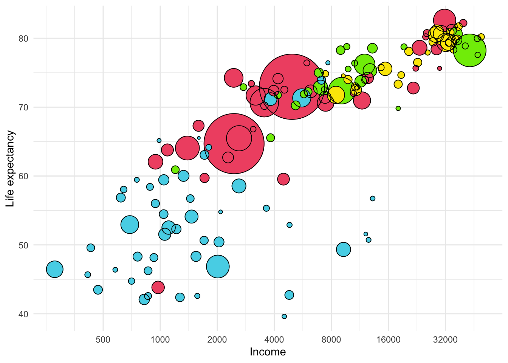

Warning: The `<scale>` argument of `guides()` cannot be `FALSE`. Use "none" instead as
of ggplot2 3.3.4.
pp

gapminder_plot<-pp+# annotate("text", x = 4000, y = 45, hjust = 0.5,# size = 85, color = "#999999",# label = "2007", alpha = .3,# family = "Helvetica Neue") +annotate("segment", x =0, xend =2014, y =46.9, yend =46.9, color ="#606F7B", linetype =2, size =.2)+annotate("segment", x =2014, xend =2014, y =0, yend =46.9, color ="#606F7B", linetype =2, size =.2)+annotate("text", x =28200, y =2, label ="per person (GDP/capita, PPP$ inflation-adjusted)", size =2.8, color ="#999999")+annotate("text", x =2304, y =42, hjust =0, size =3.5, label =paste0("Nigeria had a life expectancy of\n","46.9 years and an annual income of","\n$2014 per year per person in 2007"))+theme( plot.margin =unit(rep(1, 4), "cm"), panel.grid.minor =element_blank(), panel.grid.major =element_line( size =0.2, color ="#e5e5e5"), axis.title.y =element_text( margin =margin(r =15), size =11, family ="Helvetica Neue Light"), axis.title.x =element_text( margin =margin(t =15), size =11, family ="Helvetica Neue Light"), axis.text =element_text(family ="Helvetica Neue Light"), axis.line =element_line( color ="#999999", size =0.2))+coord_cartesian(ylim =c(4.1, 86))
Warning: Using `size` aesthetic for lines was deprecated in ggplot2 3.4.0.
ℹ Please use `linewidth` instead.
Warning: The `size` argument of `element_line()` is deprecated as of ggplot2 3.4.0.
ℹ Please use the `linewidth` argument instead.
Warning: There was 1 warning in `mutate()`.
ℹ In argument: `continent = countrycode(sourcevar = region, origin =
"country.name", destination = "continent")`.
Caused by warning in `countrycode_convert()`:
! Some values were not matched unambiguously: Ascension Island, Azores, Barbuda, Bonaire, Canary Islands, Chagos Archipelago, Cocos Islands, French Southern and Antarctic Lands, Grenadines, Heard Island, Kosovo, Madeira Islands, Micronesia, Saba, Saint Martin, Siachen Glacier, Sint Eustatius, South Georgia, South Sandwich Islands, Virgin Islands
![]()